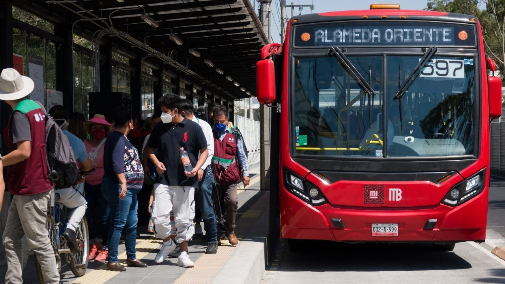
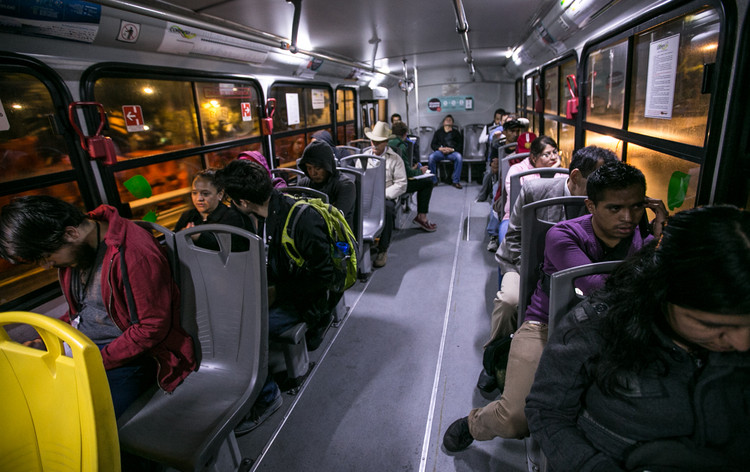

La implementación de un sistema de pago electrónico de pasajes no se reduce solamente a un asunto tecnológico. Elegir una tecnología de pago podría ser relativamente simple, dada las distintas ofertas existentes en el mercado. Las dificultades surgen en la operación e integración del sistema, ya que la decisión tecnológica puede determinar fuertemente el proceso de operación del sistema, haciéndolo a veces inviable o insuficiente para las necesidades que se desean satisfacer.


En consecuencia, junto con la decisión tecnológica, se deben analizar tanto aspectos operativos, como la velocidad de procesamiento, la logística de venta, el proceso de clearing de los fondos resultantes, la seguridad que ofrecen los equipamientos, como también aspectos relativos al entorno sociológico de la ciudad donde se desea implementarlo, de modo de adaptar el sistema y el equipamiento a las características y necesidades de los usuarios, logrando de este modo que el sistema sea sustentable en el tiempo.